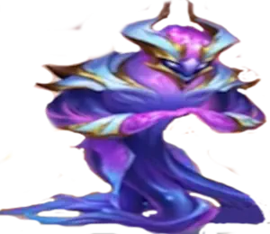
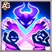
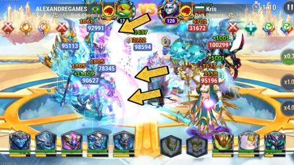
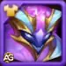
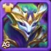
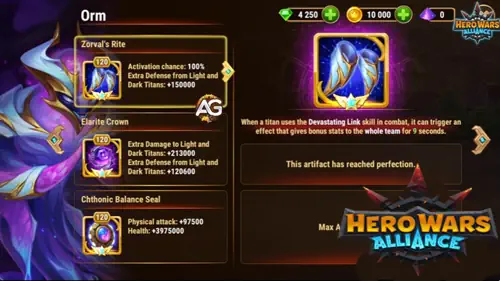
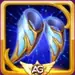
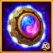
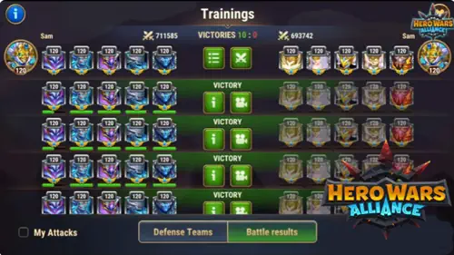
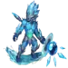

Guide du Titan Orm : support Eau ElariteHero Wars Alliance
- Par : Alexandre Domingos. .
Salut les amis, bon retour ! Orm est l'un des Titans les plus interessants ajoutes a Hero Wars Alliance, car il n'apporte pas simplement plus de degats aux equipes Eau. Il change la facon dont l'equipe survit a la pression. En tant que Titan de support Elarite et Eau, Orm relie vos allies a un ennemi central, stocke une partie des degats que votre equipe recoit, puis renvoie cette puissance stockee sous forme de coup punitif.
Si vous construisez votre equipe autour de Hyperion, Tydus, Mairi, Nova ou Sigurd, Orm donne aux equipes Eau un rythme tres different. Il recompense les equipes capables de survivre assez longtemps pour que Lien devastateur se termine, et il devient particulierement effrayant lorsque les ennemis continuent a infliger des degats a vos allies pendant ces 8 secondes.

Orm est appele le Gardien du Mystere, et ce titre correspond bien a son gameplay. C'est un Titan de support en ligne arriere qui renforce les compositions Eau grace a la redirection des degats et a une punition retardee. Il ne remplace pas les soins de Hyperion, la protection de Sigurd ou le controle de Nova. Il relie plutot ces pieces dans un plan d'equipe plus dangereux.
Son cote Elarite lui donne aussi des interactions speciales d'artefacts contre les Titans de Lumiere et d'Obscurite. Cela le rend precieux dans les matchups ou les equipes Eau elementaires classiques peuvent avoir besoin d'outils supplementaires.

Guide Orm - Table des matieres
- Qui est Orm ?
- Stats maximales d'Orm
- Evaluation globale d'Orm dans la meta
- Avantages et inconvenients d'Orm
- Guide des competences d'Orm
- Meilleur skin pour Orm
- Priorite des artefacts d'Orm
- Comment contrer Orm
- Meilleures equipes pour Orm
- Conclusion
Qui est Orm dans Hero Wars Alliance ?
Orm est un Titan de support en ligne arriere avec deux elements : Elarite et Eau. Son role principal n'est pas d'exploser les ennemis instantanement, mais de retourner les degats ennemis contre eux. Quand Orm active Lien devastateur, tous les allies deviennent lies a l'ennemi situe au centre. Pendant l'effet, Orm accumule une partie des degats subis par les allies et les libere lorsque l'effet se termine.

- Role : Support
- Element : Elarite + Eau
- Position : Ligne arriere
- Synergie : Titans Eau
Comme sa competence depend des degats subis par les allies, Orm fonctionne mieux avec des equipes capables de se proteger pendant que le lien est actif. L'immunite de Sigurd, les soins de Hyperion, la survie de Tydus, la reduction d'attaque de Mairi et l'etourdissement de Nova aident tous Orm a atteindre le moment de la recompense.
Stats maximales d'Orm - Hero Wars Alliance
Voici les stats maximales d'Orm au niveau 120 selon le fichier de donnees d'Orm :
- Sante : 12,139,122
- Attaque physique : 689,845
- Defense supplementaire contre les Titans de Lumiere et d'Obscurite : 120,600
- Degats supplementaires aux Titans de Lumiere et d'Obscurite : 213,000
La sante d'Orm est excellente pour un Titan de support en ligne arriere, ce qui compte beaucoup, car son equipe veut survivre pendant toute la fenetre de Lien devastateur. Son attaque physique soutient aussi la liberation finale des degats et ses attaques de base, mais sa vraie valeur vient de la facon dont sa competence transforme la pression ennemie en punition retardee.
Avantages et inconvenients d'Orm - Hero Wars Alliance
✅ Avantages
- Excellent support Eau avec une mecanique unique d'accumulation des degats
- Grande synergie avec Hyperion, Tydus, Mairi, Nova et Sigurd
- Bonne sante pour un Titan de ligne arriere
- La Couronne Elarite donne des degats et de la defense supplementaires contre les Titans de Lumiere et d'Obscurite
- Lien devastateur punit les ennemis qui infligent de lourds degats a toute l'equipe
❌ Inconvenients
- A besoin que les allies survivent pendant toute la duree de 8 secondes du lien
- Les Titans Terre sont indiques comme ses principaux counters
- Sa recompense peut sembler irreguliere si l'ennemi evite d'infliger assez de degats pendant le lien
- Les fragments d'artefact Elarite peuvent etre plus difficiles a collecter en dehors de certains evenements
Guide des competences d'Orm - Hero Wars Alliance
Orm possede une competence signature dans les donnees disponibles, et elle definit toute son identite de Titan de support Eau.

Lien devastateur (Ultimate)
Description en jeu : Lie tous les allies a l'ennemi au centre pendant 8.0 secondes. Accumule une portion des degats subis par les allies et les inflige a l'ennemi lorsque l'effet se termine.
Duree : 8.0 secondes
Cible : Ennemi au centre
Degats accumules : 50% des degats subis par les allies
Formule : Degats accumules = 50% du total des degats subis par les allies pendant 8.0 secondes.
Explication de la competence : Quand Orm utilise Lien devastateur, il lie tous les allies a l'ennemi au centre pendant 8 secondes. Pendant cette fenetre, Orm accumule une portion des degats que vos allies subissent. Lorsque l'effet se termine, ces degats stockes sont infliges a l'ennemi lie.
Cela signifie qu'Orm est plus fort lorsque votre equipe peut subir la pression sans s'effondrer. L'ennemi peut penser qu'il gagne en infligeant des degats a toute votre equipe, mais Orm transforme une partie de cette pression en contre-attaque retardee.
Si les allies subissent 2,000,000 degats au total pendant le lien, Orm peut stocker 1,000,000 degats pour le coup final.

Note strategique d'Alexandre : Orm veut une equipe capable de rester en vie pendant que le lien est actif. L'immunite de Sigurd, les soins de Hyperion, la reduction d'attaque de Mairi, le soutien de soin de Tydus et l'etourdissement de Nova aident tous a acheter le temps dont Orm a besoin. Plus l'ennemi gaspille de degats dans une equipe Eau protegee, plus l'explosion finale de Lien devastateur devient menacante.
Meilleur skin pour le Titan Orm - Hero Wars Alliance
Orm a deux skins dans les donnees JSON : Skin par defaut et Skin primordial. Les deux sont utiles, mais ils soutiennent differentes parties de son kit.

Skin par defaut
Attaque physique : +196,800
Le Skin par defaut augmente l'attaque physique d'Orm. C'est utile, car Orm attaque toujours et profite de la progression offensive, mais son role n'est pas du DPS pur. Priorisez-le quand vous voulez plus de pression et une meilleure puissance de finition de votre equipe Eau.
Priorite d'evolution pour le PVP : Elevee - Plus d'attaque physique garde la pression d'Orm pertinente, mais la survie reste plus importante pour son role de support.
Priorite d'evolution pour le Donjon : Moyenne - Utile pour les degats, mais le Donjon recompense generalement davantage Orm pour sa capacite a rester en vie dans les combats longs.

Skin primordial
Sante : +2,627,975
Le Skin primordial est extremement important pour Orm, car Lien devastateur a besoin de temps. La sante supplementaire l'aide a survivre aux longs combats et rend l'equipe Eau plus stable dans les matchups a forte pression.
Priorite d'evolution pour le PVP : Tres elevee - Pour un Titan de support qui doit rester en vie jusqu'a la fin de Lien devastateur, c'est l'investissement le plus sur.
Priorite d'evolution pour le Donjon : Tres elevee - La sante supplementaire ameliore la regularite dans les longs combats du Donjon et aide Orm a survivre aux vagues repetees.
Resume de priorite des skins :
1er : Skin primordial - La sante ameliore la survie et la regularite d'Orm.
2e : Skin par defaut - L'attaque physique ameliore la pression offensive une fois la durabilite assuree.
Priorite d'evolution des artefacts d'Orm Hero Wars Alliance
Les artefacts d'Orm suivent le modele Elarite : une arme unique, la Couronne Elarite et un Sceau chthonien. Son arme est la plus importante, car elle soutient directement toute l'equipe lorsqu'il utilise Lien devastateur.


Rite de Zorval (Artefact d'arme)
Chance d'activation : 100%
Duree du buff d'equipe : 9 secondes
Defense supplementaire contre les Titans de Lumiere et d'Obscurite : +150,000
Quand Orm utilise Lien devastateur, Rite de Zorval peut declencher un bonus pour toute l'equipe pendant 9 secondes. Au niveau 120, la chance d'activation est de 100%, donc chaque ultimate donne a toute votre equipe une protection supplementaire contre les Titans de Lumiere et d'Obscurite.
Priorite d'evolution pour le PVP : Tres elevee - C'est l'artefact le plus important d'Orm, car il donne a toute l'equipe un buff defensif garanti apres son ultimate.
Priorite d'evolution pour le Donjon : Elevee - Une forte protection d'equipe est precieuse, mais les matchups contre les Titans de Lumiere et d'Obscurite ne sont pas presents dans chaque combat du Donjon.

Couronne Elarite (Artefact de couronne)
Degats supplementaires aux Titans de Lumiere et d'Obscurite : +213,000
Defense supplementaire contre les Titans de Lumiere et d'Obscurite : +120,600
La Couronne Elarite est excellente contre les Titans de Lumiere et d'Obscurite. Elle donne a Orm des bonus offensifs et defensifs dans ces matchups, mais elle est plus situationnelle que l'arme et le sceau, car elle n'aide pas contre les Titans Terre, Eau ou Feu.
Priorite d'evolution pour le PVP : Moyenne - Il existe cinq groupes d'elements de Titans, et cette couronne aide seulement contre Lumiere et Obscurite, donc elle ne devrait pas etre classee au-dessus de moyenne pour le PVP general.
Priorite d'evolution pour le Donjon : Moyenne - Utile seulement dans les bons matchups elementaires. Ameliorez-la apres l'arme et le sceau.

Sceau d'equilibre chthonien (Artefact de sceau)
Attaque physique : +97,500
Sante : +3,975,000
C'est l'artefact de stats le plus universellement utile pour Orm. Il lui donne un enorme bonus de sante et une solide augmentation d'attaque physique, ameliorant a la fois la survie et la pression dans chaque matchup.
Priorite d'evolution pour le PVP : Elevee - Priorisez-le juste apres Rite de Zorval, car la sante et l'attaque physique fonctionnent dans chaque matchup.
Priorite d'evolution pour le Donjon : Tres elevee - C'est le meilleur artefact de Donjon pour Orm, car il ameliore la survie et les degats dans chaque combat, quel que soit l'element ennemi.
Resume de priorite des artefacts :
1er : Rite de Zorval - buff defensif d'equipe garanti apres Lien devastateur.
2e : Sceau d'equilibre chthonien - sante plus attaque physique pour chaque matchup.
3e : Couronne Elarite - puissante contre les Titans de Lumiere et d'Obscurite, mais situationnelle.
Comment contrer le Titan Orm - Hero Wars Alliance
Orm est dangereux lorsque votre equipe continue d'infliger des degats dans Lien devastateur sans achever ses allies. Les meilleurs counters sont les equipes capables de mettre rapidement les Titans Eau sous pression, de perturber la formation ou d'utiliser l'avantage de l'element Terre contre les compositions Eau.

Angus : Angus est l'une des meilleures reponses a Orm, car les Titans Terre mettent naturellement les Titans Eau sous pression. Ses degats de zone soutenus peuvent toucher toute la formation Eau pendant la fenetre de preparation d'Orm, forcant Hyperion, Tydus et Sigurd a depenser des ressources defensives avant que Lien devastateur puisse porter ses fruits.

Avalon : Avalon aide les equipes Terre a survivre a la punition retardee de Lien devastateur. Ses boucliers donnent a la formation Terre plus de temps pour continuer a attaquer tout en reduisant le danger du coup final d'Orm avec les degats stockes.

Eden : Eden est un counter cle, car son controle peut retirer un Titan aleatoire du combat et briser le timing qu'Orm recherche. Si l'equipe d'Orm perd le controle avant la fin de Lien devastateur, la formation Eau devient beaucoup plus facile a vaincre.

Sylva : Sylva renforce la pression des Titans Terre et aide l'equipe a garder l'elan contre les formations Eau. C'est important, car Orm est le plus fort lorsque ses allies survivent calmement ; Sylva aide plutot les equipes Terre a transformer le combat en pression constante.

Verdoc : Verdoc est particulierement dangereux pour Orm, car il ameliore les performances des equipes Terre contre les Titans Eau. Une pression supplementaire et une synergie Terre plus forte rendent plus difficile pour l'equipe Eau d'Orm de survivre pendant toute la duree de 8 secondes de Lien devastateur.
Titans Eau + Orm contre les Titans de Lumiere en combat
Les Titans Eau + le Titan Elarite Orm sont tres efficaces en combat contre les Titans de Lumiere, les Titans de Feu et les Titans d'Obscurite grace a leur synergie et a leurs capacites strategiques.

Meilleures equipes pour le Titan Orm - Hero Wars Alliance
Orm appartient naturellement aux equipes de Titans Eau. Les deux formations ci-dessous viennent directement des notes JSON d'Orm et se concentrent sur differentes facons de proteger l'equipe pendant qu'Orm prepare Lien devastateur.
Equipe 1 - Equipe Eau avec Nova en ligne avant
C'est une equipe tres forte qui utilise Nova comme combattante de premiere ligne de style tank. Meme si Nova est une Tireuse, lorsqu'elle se place en premiere ligne, elle gagne rapidement de l'energie et peut utiliser son ultimate pour etourdir les ennemis. Ce controle donne a Orm plus de temps pour terminer Lien devastateur.
| Meilleure equipe Orm 1 - Hero Wars Alliance | ||||
|---|---|---|---|---|
|
|
|
 Tydus |
|
|
Equipe 2 - Equipe Eau avec Sigurd comme tank
Cette version utilise Sigurd comme tank. Quand Sigurd active son ultimate, il devient immunise pendant 5 secondes, absorbant la pression avant qu'elle n'atteigne les allies. Cette protection est exactement ce qu'Orm veut pendant que Lien devastateur est actif.
Roles des membres de l'equipe
- Hyperion : Super Titan, Tireur, soins et degats.
- Mairi : Titan de support qui diminue l'attaque des ennemis de 40%.
- Tydus : Titan Invocateur et soigneur.
- Orm : Titan de support et specialiste de Lien devastateur.
- Nova : Titan Tireur avec un controle d'etourdissement important.
- Sigurd : Titan Tank avec bouclier et immunite pendant l'ultimate.
Faiblesses de l'equipe et considerations
Faible contre : les Titans Terre comme Eden, Sylva, Avalon, Verdoc et Angus. Ces equipes peuvent mettre les formations Eau sous pression avec un controle solide, une bonne durabilite et un avantage elementaire.
Considerations strategiques : Orm est le plus fort lorsque votre equipe survit pendant toute la duree de 8 secondes de Lien devastateur. Si votre equipe Eau s'effondre trop vite, Orm ne peut pas convertir les degats entrants en contre-attaque significative. Construisez assez de soins, de protection et de controle autour de lui avant d'attendre que la competence porte les combats a elle seule.
Conclusion - Orm vaut-il la peine d'etre developpe ?
Orm vaut absolument la peine d'etre developpe si vous investissez dans les Titans Eau. Il ajoute une mecanique de support que les equipes Eau n'avaient pas auparavant : l'absorption des degats convertie en frappe retardee. Cela le rend particulierement precieux dans les combats ou les ennemis s'appuient sur une forte pression contre toute l'equipe.
Pour les skins, priorisez d'abord le Skin primordial si vous voulez de la regularite, car la sante aide Orm a survivre et a continuer de soutenir l'equipe. Ensuite, developpez le Skin par defaut pour plus d'attaque physique. Pour les artefacts, commencez par Rite de Zorval, puis Sceau d'equilibre chthonien, et terminez avec Couronne Elarite pour les matchups Lumiere et Obscurite.
Mes compositions preferees sont Hyperion, Mairi, Tydus, Orm, Nova pour le tempo de controle, et Hyperion, Tydus, Orm, Nova, Sigurd pour une version tank plus sure. Les deux equipes comprennent la meme idee : proteger l'equipe, laisser Orm terminer Lien devastateur, et punir les ennemis qui attaquent votre formation Eau.
Merci d'avoir lu ce guide Orm. Partagez-le avec vos compagnons de guilde s'il vous a aide, et continuez a tester differentes formations Eau, car la valeur d'Orm augmente lorsque vous apprenez le timing exact de son lien.
Video suggestion
Explorez de nouvelles competences avec nos guides en vedette !
 Guide du Titan Alecto pour Hero Wars Alliance
Guide du Titan Alecto pour Hero Wars Alliance Guide du Titan Eden pour Hero Wars Alliance
Guide du Titan Eden pour Hero Wars Alliance Guide du Titan Invocateur Lumira pour Hero Wars Alliance
Guide du Titan Invocateur Lumira pour Hero Wars AllianceLaissez votre avis !
Avez-vous aime notre Guide du Titan Orm ? Y a-t-il quelque chose que vous n'avez pas compris ou que vous aimeriez suggerer de modifier ? Rejoignez la section des commentaires sur Alexandre Games et partagez votre avis, vos questions et vos suggestions.
Cliquez sur le bouton ci-dessous pour commencer :